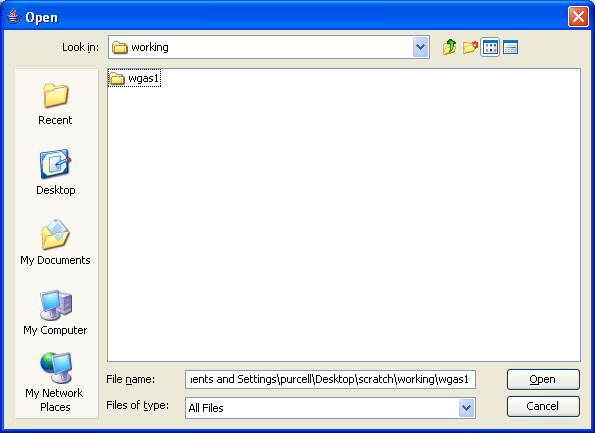

PLINK: Whole genome data analysis toolset

Setting the local project folder
Here we set the local project folder. In this example we are running in remote mode, so this is just an empty folder,
wgas1
.
Previous
|
Next